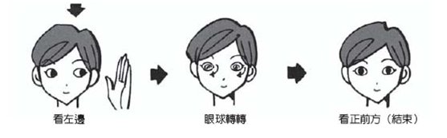
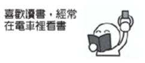
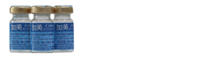

Step.1
Step.2
Step.3

Q1.
Q2.
Q3.
Q4.
Q5.
Q6.
Q7.
Q8.
Q9.
Q10.
診斷症狀 7個（含）＝ 眼睛負擔太大了哦！！
診斷症狀4～6個（含）＝ 要好好注意眼睛哦！！
診斷症狀3以下（含）＝ Good！！
一：絕不配戴隱形眼鏡過夜
雖然目前隱形眼鏡材質的透氧度大為提高，甚至有些隱形眼鏡強調可以持 續配戴不用取下。但是睡眠時角膜本已處於相對缺氧狀態，此時配戴隱形眼鏡會增加角膜受損與感染機會。
二：絕不配戴隱形眼鏡游泳
在游泳時使用隱形眼鏡是很容易造成角膜感染的，應使用有度數的蛙鏡來矯正。
三：絕不用舌頭或唾液來清潔隱形眼鏡
口腔內充滿了各式各樣的細菌，是感染的可能來源。
四：絕不只用水龍頭的水來清洗隱形眼鏡
國內自來水多半達不到生飲標準，水中也有可能含有致病細菌，用自來水清洗是相當危險的，最好使用生理食鹽水。
五：不要隨意使用他人的隱形眼鏡
即使兩人的度數相近，但是角膜弧度可能大不相同，不合適的眼鏡可能造成角膜傷害。且共用隱形眼鏡就像共用牙刷一樣，是很不衛生且有可能感染疾病的。
六：在配戴隱形眼鏡之前不要使用含有乳霜的香皂洗手
因為乳霜會殘存在您的手上污染眼鏡。
七：不要在配戴隱形眼鏡時使用眼藥水
幾乎所有的藥水都含有防腐劑，藥水成分與防腐劑可能破壞鏡片材質，且隱形眼鏡吸附的藥品可能造成眼睛毒性。
八：不要在眼睛不適時配戴隱形眼鏡
如配戴時發生不適，請立即取下，切莫遲疑。
這種以美容裝飾為目的的鏡片，因為上面有各種圖案及染色，會降低眼睛的對比敏感度，不宜在駕車時使用。
十：配戴隱形眼鏡發生問題時不要諱疾忌醫
有些感染症是會導致失明的，儘速就醫才是最聰明的選擇。1.保濕：
不是只有美麗的臉龐需要保濕，眼睛也要常保濕潤。多眨眼睛可刺激淚腺分泌淚液。若是淚液不足，可以使用未加防腐劑，單劑型的人工淚液（即一天之內可丟棄的包裝），避免防腐劑在眼睛內堆積，傷害角膜。
2.保持眼睛的乾淨：
可用一般市售的卸妝棉擦拭眼瞼周圍的油脂或分泌物。
3.配戴適合的隱形眼鏡：
配戴前都需經眼科醫生的評估，隱形眼鏡分軟硬式，又各有不同材質，每個人又有不同環境、體質，戴錯了，反而變成對眼睛更大的刺激物。
4.每用眼半小時可休息5分鐘：
休息可以是閉眼睛，也可以是讓眼睛改看遠方，或是動動眼珠，鬆弛眼球肌肉，避免疲勞。
5.避免使用生理食鹽水做人工淚液：
生理食鹽水可以做配戴隱形眼鏡前沖洗用，但不具潤滑眼睛的效果，而且開瓶後的生理食鹽水，是微生物滋生的溫床。
6.在戶外避免風吹日曬：
可以戴防風或防曬的眼鏡，以避免感染、刺激物、或淚水蒸發。
7.避免使用未經醫生指示的眼藥水：
有些眼藥水含血管收縮劑，偶而點可以紓解一時充血的問題。但如長期使用，一旦養成依賴性，不點時會充血更厲害，眼睛就更紅。此外，有的藥水含類固醇成分，具有消炎作用，可以減緩發炎引起的紅眼睛，但是，點久了，會使眼壓升高導致青光眼。眼藥水雖可為眼睛帶來一時的舒服，但也可能掩蓋了真正的問題。
8.避免生病時戴隱形眼鏡：
生病時，如感冒，身體免疫力較差，原來戴隱形眼鏡眼睛的防衛機能就降低，加上又生病，淚液品質也較不好，如白血球下降或其他免疫物質濃度下降，眼睛就易遭感染，或是一旦有刺激物就易紅腫。
1.一定要用手搓洗鏡片
2.每1∼2年更換新的隱形眼鏡
3.鏡片不可放在生理食鹽水中保存。
4.不同廠牌的隱形眼鏡，不可交互使用
5.每週固定去蛋白
6.藥水也有使用期限
7.隱形眼鏡配戴前，先沖生理食鹽水。
8.隱形眼鏡不可以長期浸泡在藥水中
9.半年一次送原廠保養
10.雙氧消毒系統，一定要中和後才可使用
11.眼睛紅，最好先取下隱形眼鏡
12.定期更換隱形眼鏡的保存盒
一般眼藥水含有小分子藥物或防腐劑，軟式隱形眼鏡的材質也特別容易吸附異物，殘留物便會影響隱形眼鏡品質，建議患者點眼藥水後稍待20分鐘以上再戴隱形眼鏡，也建議盡量減少佩戴隱形眼鏡時間，才有利降敏的療效。
■選擇適合自己的人工淚液：人工淚液有很多種，成分也不盡相同，最安全的方法是找合格的眼科醫生，經過仔細檢查與評估，再找出適合自己的人工淚液。
■選擇不含防腐劑的產品：防腐劑也有很多種，有些含汞，容易引起過敏或傷害。眼睛乾燥時會比較敏感，若是碰到防腐劑，無異是雪上加霜。一般符合標準的產品都會清楚標明是否添加防腐劑。
■注意使用期限：不含防腐劑的人工淚液，當然也就容易變質或污染。因此，要注意使用期限，合格的產品會清楚的標示使用期限。
使用前還要先看看，藥水是否變質？是否清晰透明？顏色有沒有改變？若有變質，一定要丟掉。
■戴隱形眼鏡時，最好不要點人工淚液：戴著隱形眼鏡點藥水，鏡片吸收的濃度是角膜的數倍，長期下來，角膜的上皮細胞會損害，視力也會模糊，嚴重的還會引起角膜潰瘍。
只有在眼睛乾到剝不下鏡片時，才使用人工淚液，得到一些滋潤，否則，應該避免戴著隱形眼鏡點人工淚液。
■使用次數不宜太頻繁：一天之中最好不超過6次，兩次中間至少要隔10分鐘。因為點得太頻繁，反而會破壞正常的淚液成分，帶來反效果。
1.保持正常的作息，避免熬夜。睡眠不足，眼睛容易疲勞、乾澀不適。
2.攝取含維生素A、C、E等抗氧化劑的食物，如胡蘿蔔、南瓜、芭樂、堅果等，有益眼睛，也有助於皮脂腺正常分泌。
3.讓眼睛定時的休息。看書或打電腦50分鐘之後，就應該休息10分鐘。喝水、上廁所、走一走、看看遠方。
4.提醒自己「多眨眼睛」。眨眼睛是不自主的，但要提醒自己多眨眼睛，而且要用力的眨，最好做一個完全的眨眼動作，或者眨一下之後，再閉幾秒鐘，讓眼球獲得滋潤。
5.按摩或熱敷。眼睛疲倦時，可以按摩眼眶骨的地方，淚腺正位於外側上方，按摩能幫助淚腺的分泌。熱敷也有同樣的效果，用一條溫毛巾，或者用一杯溫開水，閉上眼睛對著它，大約5分鐘，水溫大約是喝茶時可以忍受的溫度。
6.在冷氣房裏，放一杯水或一盆水生植物。這樣可在乾燥的環境，增加一點濕度。
7.調整電腦螢幕的距離和角度。螢幕和眼睛要距離30～45公分，而且最好低於眼睛視線，因為仰視螢幕，會增加眼球曝露的面積，讓淚液蒸發得較快。
8.正確的配戴隱形眼鏡。正常的配戴時間是一天8～12個小時，睡眠不足時，要減少配戴的時間。拋棄式的眼鏡，時間到了就要淘汰，因為材質會衰退，透氧率會改變，也會影響眼睛的乾燥程度。
9.注意口服藥的成分。安眠藥、鎮定劑或過敏體質所吃的抗組織胺都會影響副交感神經，而交感神經和副交感神經都和淚腺分泌有關。
10.積極治療眼球表面的疾病。砂眼、慢性結膜炎或眼瞼炎容易讓眼睛結膜形成結疤，破壞角膜上皮細胞，也會破壞分泌淚液的細胞。因此，眼睛如果有任何問題，應該儘快找眼科醫生治療，避免眼球細胞被破壞，形成乾眼症。
日拋
舒視能每日拋棄式隱形眼鏡 產品特色和優點： 設計以雙眼運作為概念 高含水 : 鏡片含水量78% 高保濕 : 模擬淚膜脂質層，保濕及維持視覺清晰 高透氧 : 滿足雙眼所需氧氣量 前表面非球面光學設計，提供清晰無像差的視覺品質 阻隔UVA及UVB
雙週
舒服能59雙週拋棄式隱形眼鏡 產品特色和優點： 含水量達 59%
老花
舒服能漸進多焦點拋棄式隱形眼鏡 產品特色和優點： 低含水量、可矯正屈光不正及老花眼
日拋
恆潤氧每日拋棄式隱形眼鏡 產品特色和優點： 讓雙眼自由呼吸般，就像沒戴鏡片一樣 結合優異的透氧、高等級 UV 防護與HYDRACLEAR®1的極致保濕科技
雙週拋
歐舒適二週拋棄式隱形眼鏡
日拋
視康多水潤日拋隱形眼鏡 產品特色和優點： 含31%的nelfilcon A 及69%的水。 鏡片含Cu-phthalocyanine，呈淡藍色幫助操作。 鏡片個別包裝於含緩衝食鹽水的密封水盒中 緩衝食鹽水中含至多0.05% 的Poloxamer。鏡片經蒸氣消毒滅菌。
月拋
視康舒適氧高透氧月拋 產品特色和優點： 矽水凝膠材質， 透氧量高達 138 Dk/t 超越閉眼時角膜所需最低透氧量125 Dk/t 之隱形眼鏡 保存液添加保濕因子 Plasma鏡面處理技術，減少蛋白質、油脂沉積， 使鏡片光滑親水增加濕潤度 低含水量 33%，降低鏡片脫水現象
日拋
帝康臻魅彩色日拋軟性隱形眼鏡 產品特色和優點： 含水量42%
雙週拋
精華帝康彩色抛棄式軟性隱形眼鏡 產品特色和優點： 含水量42% 辨識色彩：黑色
月拋
帝康彩色月拋軟性隱形眼鏡 產品特色和優點： 含水量42% 辨識色彩：黑色、棕色
長戴式
帝康軟性非球面隱形眼鏡 產品特色和優點： 弧度：S、L (尚有XL特大弧度可供訂製) 辨識色彩：白色、藍色
日拋
加美彩色美瞳日拋 產品特色和優點： 採高科技色彩夾層技術 精心璀璨花紋設計 親水性材質，保濕性強 美瞳系列：美瞳棕、美瞳黑、美瞳紫
雙週拋
加美雙週拋棄式 產品特色和優點： 適合亞熱帶生活型態配戴的隱形眼鏡。 邊弧曲線設計，使淚液氧氣保持舒暢，濕潤性極佳。 鏡片柔軟且具高度韌性，不易皺摺，裝卸方便。 特別適合淚液分泌較少及長期冷氣房工作者。
月拋
加美醉心彩色月拋 產品特色和優點： 立體外圍、突顯大眼效果 一體成型包覆式設計 舒適保濕 自然圖紋、美麗加倍

長戴式
加美38保濕彩晶藍片 產品特色和優點： 鏡片保濕效果極佳，含水量38%特別適合淚液分泌較少，以及長期使用隱形眼鏡者。 1.材質穩定性良好，舒適清晰不易沾附雜質。 2.鏡片柔軟，矯正效果佳，不易增加眼睛負擔。
日拋
海昌非球面日拋隱形眼鏡 產品特色和優點： 1. 38%含水量 2.玻尿酸強效保濕因子 (Hyaluronic acid) 3.海藻糖 (Trehalose) 4. AI(Artificial Intellectual) 智能雙非球面 5.超薄親水性材質 (中心厚度0.044~0.131設計)
月拋
海昌非球面月拋隱形眼鏡 產品特色： 1. 由polymacon所製成的軟性親水性隱形眼鏡 2. 添加天然玻尿酸及海藻糖。 3. 雙非球面鏡片，使內面表面中央彎曲，周圍逐漸趨向平坦。
日拋/透明日拋
產品特色： 含水量：58% 抗 U V：YES B. C.：8.5 D I A.：14.2 成份：含有植物性保濕因子、玻尿酸
雙週拋/彩色雙週拋迷霧黑
產品特色： 含水量：58% 抗 U V：YES B. C.：8.5 D I A.：14.2 成份：含有植物性保濕因子、玻尿酸
日拋/諾貝爾日拋
產品特色： 鏡片材質:HEMA EGDMA(第一類素材) 含水量:38% 顏色:淡藍
雙週拋/諾貝爾雙週拋
產品特色： 鏡片材質:HEMA EGDMA(第一類素材) 含水量:38% 顏色:淡藍
諾貝爾月拋、季拋
產品特色： 鏡片材質:HEMA EGDMA(第一類素材) 含水量:38% 顏色:淡藍
諾貝爾變色片
產品特色： 鏡片材質:HEMA EGDMA(第一類素材) 含水量:38% 顏色:淡藍

 操作說明
操作說明